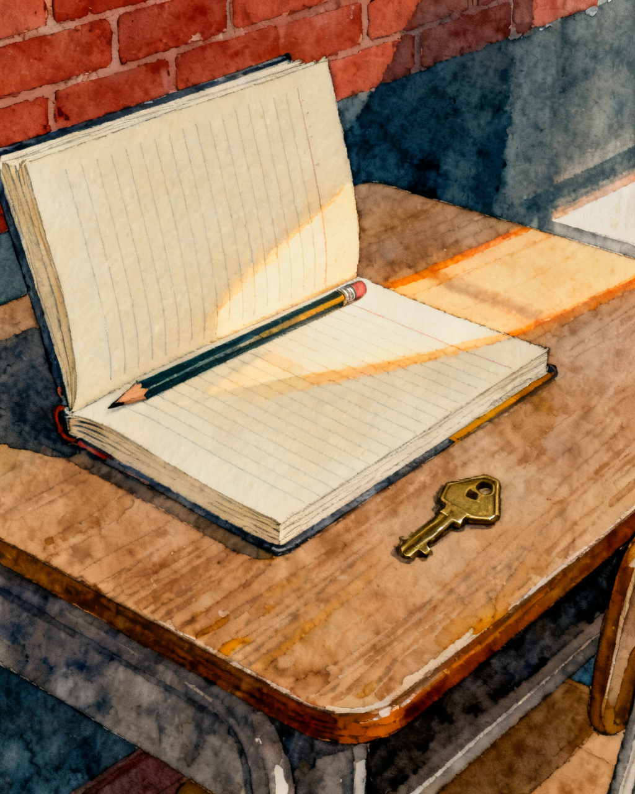

Creative writing · Lesson 1
Six Little Stories
Today you will write five stories of six words, then one of fifty words.

Creative writing · Lesson 1
Today you will write five stories of six words, then one of fifty words.
Nothing you write is corrected or collected.
Create sits at the top of the pyramid.
To make something new you first have to remember, understand, apply, analyse and evaluate.
Bloom’s taxonomy
Today you will plan one story before you start writing.
1
Write five stories.
Each one is six words long, and you have seven minutes.
2
Write one of them out.
It will run to about fifty words, in one paragraph.
3
Read your story out loud.
Each listener tells you one thing they saw.
By the end, you will have written a story and heard it read back.
For sale: baby shoes, never worn.
Class trip. I stayed on the bus.
The dog knew before we did.
The first is usually credited to Ernest Hemingway.
Find all three in the stories above.
Something has happened to a person.
2Something has changed, but not in a good way.
3Something has been left out. We need to figure out what.
Take one from each column and put the three together.
A thing
a single glove
a house key
a cracked watch
A place
the back of the bus
a lost property box
the car park at night
A person
the quiet one
the new student
the brother who left
Write five stories in your notebook. You have seven minutes.
At the end you will choose the best one and make it into a story.
Remember the pattern:
For sale: baby shoes, never worn.
Something has happened to a person.
Something has changed, but not in a good way.
Something has been left out. We need to figure out what.
1
One person
Say who they are and what they want.
2
One place
Put all of it in one room.
3
One thing goes wrong
It happens inside the next minute of the story.
The whole thing runs to about fifty words, in one paragraph.
I’m not who they say I am. I didn’t do the things they say I did. I was away at the time, in a strange land where everything was fine and beautiful. How could I have killed those people when I have been walking for centuries through an endless garden.
It wasn’t me; I wasn’t there.
Listen to it read aloud.
Finish the paragraph. Leave the spelling for the editing lesson.
Go.
1Listeners close their eyes.
2Read it out loud, slowly.
3Then say nothing at all.
4Each listener says one thing they saw.
The writer cannot see what you saw, so tell them what it was. ‘I liked it’ is not something they can use.
Think of a story you would like to write next.
Say it to the person beside you in one sentence.